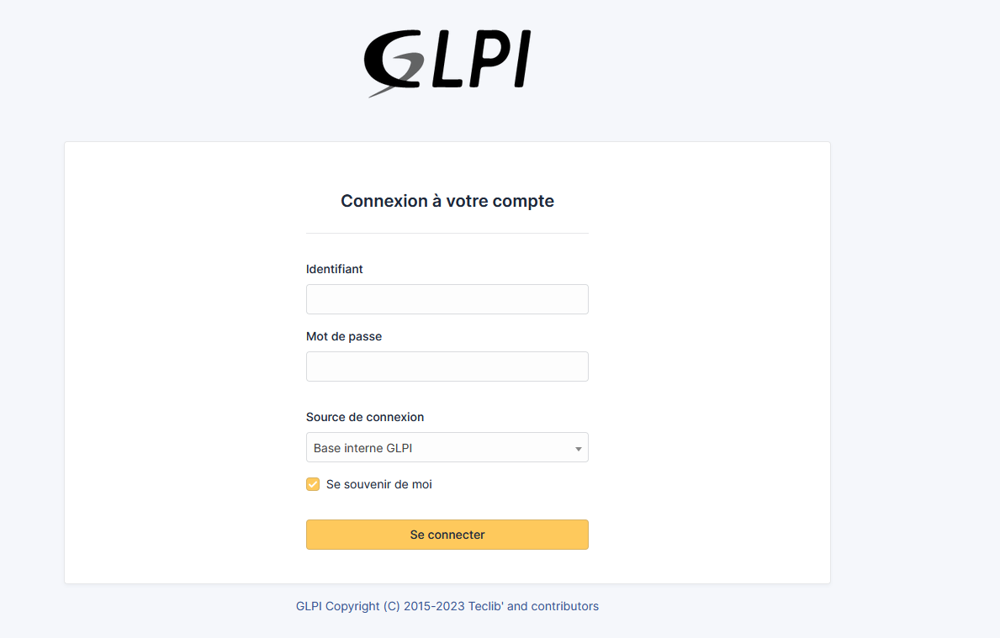
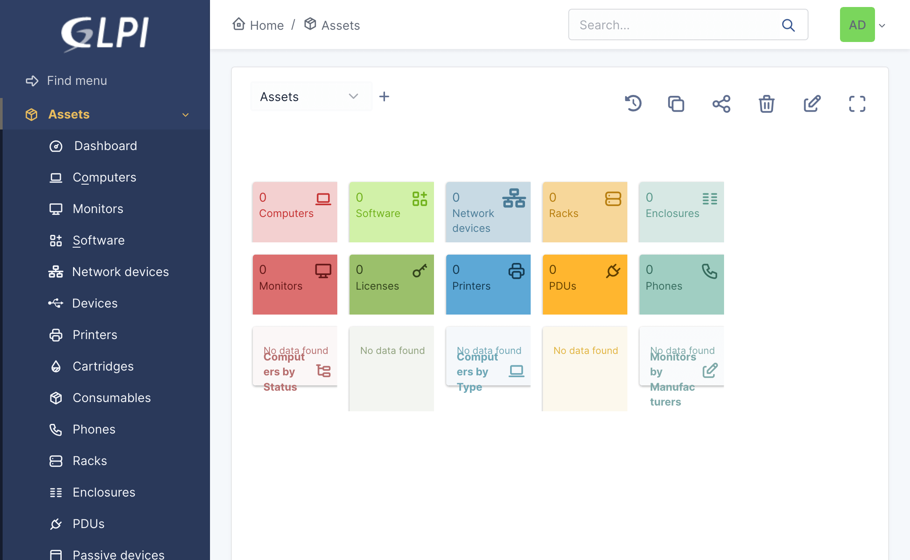
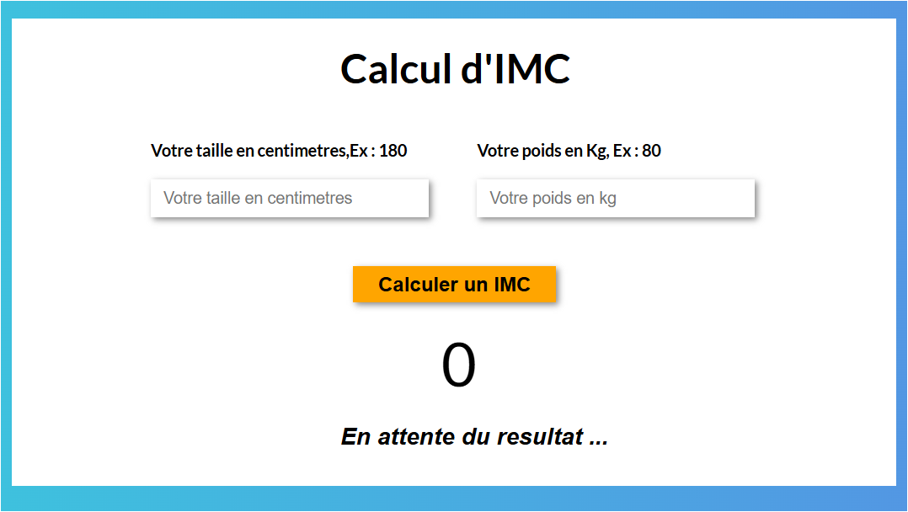
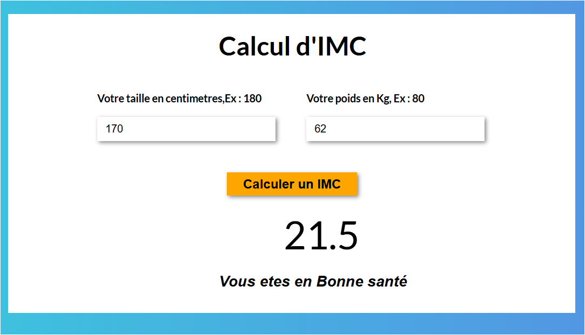
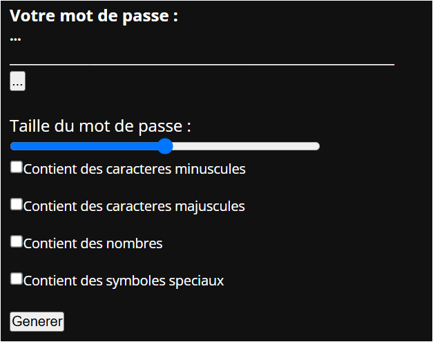
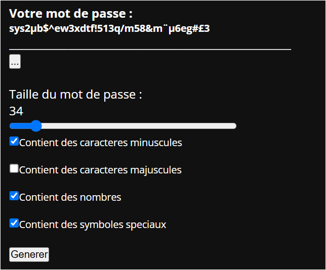
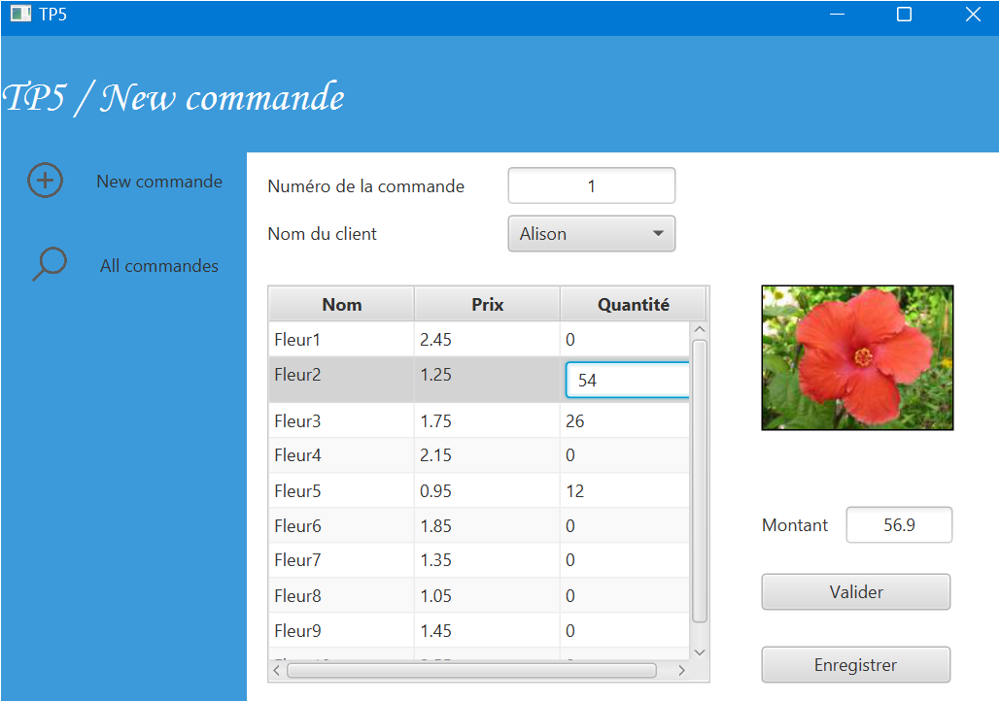
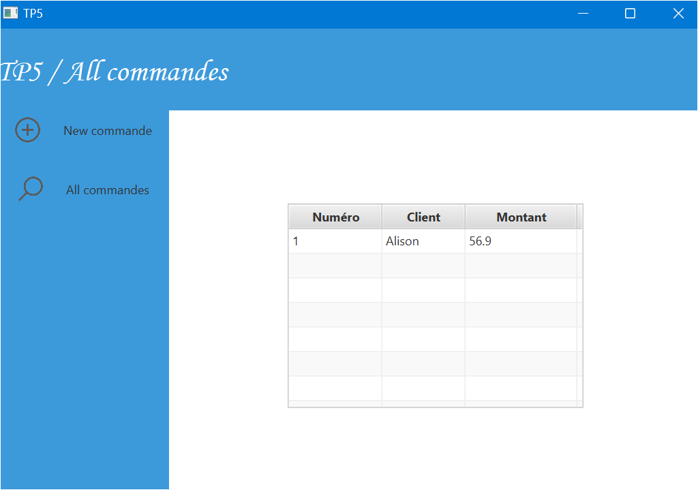

Scolaire
GLPI
Gestion de parc de ticketingGLPI (Gestionnaire Libre de Parc Informatique) est un logiciel libre de gestion de services informatiques (ITSM) et de gestion de parc informatique. Il est très utilisé par les équipes informatiques pour gérer les demandes des utilisateurs, suivre les équipements informatiques et superviser la maintenance et le support.
 
Use this page as a starter for your own custom pages.
Création d'une Active Directory (AD)
Active directoryActive Directory (AD) est un service de gestion des identités et des accès développé par Microsoft. Il est surtout utilisé dans les environnements Windows pour centraliser et gérer les utilisateurs, les ordinateurs, et les ressources du réseau d’une organisation. AD est particulièrement utile dans les grandes entreprises, car il permet une gestion centralisée et sécurisée des accès..
Use this page as a starter for your own custom pages.
Calcul d'IMC
JAVASCRIPT & HTML
Le but de ce projet est de coder un calculateur d'IMC à partir des valeurs entrées par l'utilisateur dans les 2 inputs.
 
PASSWORD GENERATOR
JAVASCRIPT & HTMLLe but de ce projet est de coder un générateur de mot de passe en utilisant les types de caractères sélectionnés par l'utilisateur. 3 checkboxes doivent être sélectionnés au minimum. De plus, l'utilisateur peut choisir la longueur du mot de passe et le copier dans le presse-papier par la suite.
 
FLEURISE
JAVA & SCENEBUILDERLe but de ce projet est de coder une interface de commandes de fleurs auprès d'un fleuriste. Les commandes des différents clients sont ensuite enregistrées sous forme de tableau.
 